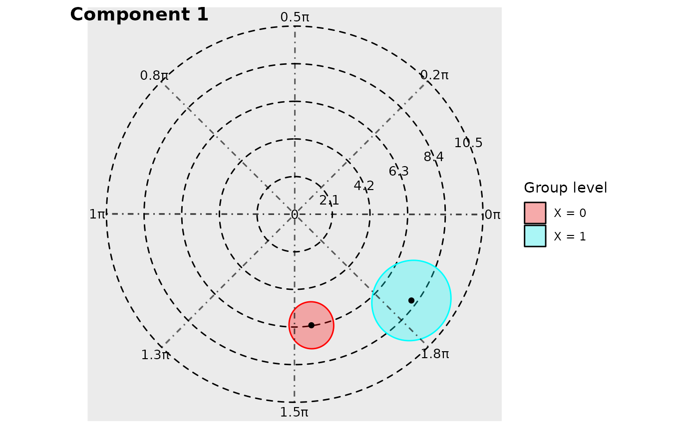

Generates a polar plot with elliptical confidence intervals
Usage
polar_plot(
x,
ci_level = 0.95,
contour_interval,
contour_label_frequency = 1,
component_index,
grid_angle_segments = 8,
radial_units = c("radians", "degrees", "period"),
clockwise = FALSE,
text_size = 3,
text_opacity = 0.5,
fill_colours,
ellipse_opacity = 0.3,
circle_linetype = "dotted",
start = c("right", "left", "top", "bottom"),
view = c("full", "zoom", "zoom_origin"),
overlay_parameter_info = FALSE,
quietly = TRUE,
...
)Arguments
- x
An object of class
cosinor.glmm- ci_level
The level for calculated confidence ellipses. Defaults to 0.95.
- contour_interval
The distance between adjacent circular contours in the background of the polar plot.
- contour_label_frequency
This controls the frequency of labels assigned to contours. For example,
contour_interval = 2means that every second contour is labelled. By default, every contour is labelled (contour_label_frequency = 1).- component_index
A number that corresponds to a particular component from the
cosinor.glmm()object that will be used to create polar plot. If missing (default), then plots for all components will be arranged in the returned plot. If a single or multiple values are provided, then these components will be returned. (for examplecomponent_index = 1,component_index = c(1, 3)).- grid_angle_segments
An
integer. Determines the total number of segments in the background of the polar plot. For example, a value of 4 will create quadrants around the origin. Defaults to 8.- radial_units
A
characterspecifying the angular units of the plot. Possible values are one ofc('radians', 'degrees', 'period'). These units relate to the period of the component being visualised.'radians': \([0, 2\pi]\)'degrees': \([0, 360]\)'period': \([0, period]\)
- clockwise
A
logical. IfTRUE, the angles increase in a clockwise fashion. IfFALSE, anti-clockwise. Defaults toFALSE.- text_size
A number controlling the font size of the text labels. Defaults to 3.
- text_opacity
A
numericbetween 0 and 1 inclusive that controls the opacity of the text labels.- fill_colours
A
charactervector containing colours that will be mapped to levels within a group. If the model has components with different number of levels per factor, the length of this input should match the greatest number of levels. If not, or if the number of levels exceeds the length of the default argument (8), colours are generated usingrainbow().- ellipse_opacity
A
numericbetween 0 and 1 inclusive that controls the opacity of the confidence ellipses. Defaults to 0.3.- circle_linetype
A
characterthat determines thelinetypeof the radial circles in background of the polar plot. See?linetypefor more details.- start
A
character, withinc("right", "left", "top", "bottom")that determines where angle 0 is located. Ifstart = "top", andclockwise = TRUE, the angle will rotate clockwise, starting at the '12 o-clock' position on a clock.- view
A
character, withinc("full", "zoom", "zoom_origin")that controls the view of the plots.'full': maintains a full view of the polar plot, including the background radial circles.'zoom': finds the minimum view window which contains all confidence ellipses.'zoom_origin': zooms into the confidence ellipses (like "zoom"), but also keeps the origin within frame.
- overlay_parameter_info
A
logicalargument. IfTRUE, more information about the acrophase and amplitude are displayed on the polar plots.- quietly
Analogous to verbose, this
logicalargument controls whether messages are displayed in the console.- ...
Additional, ignored arguments.
Examples
model <- cosinor.glmm(
Y ~ X + amp_acro(time, group = "X", period = 12),
data = vitamind
)
polar_plot(model)
